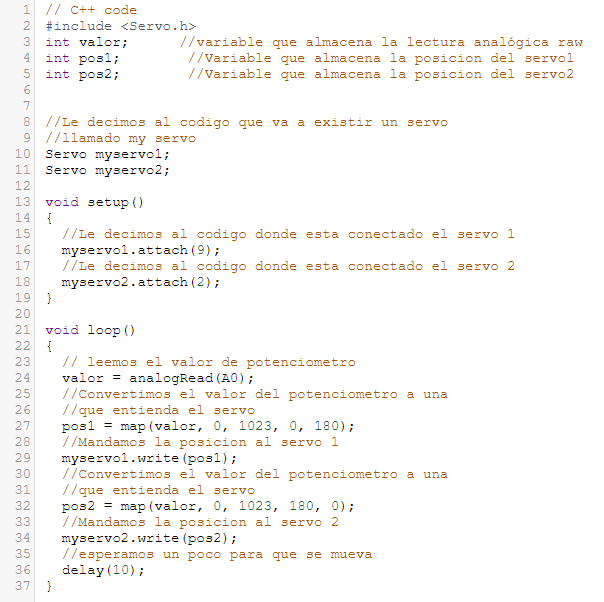

Portafolio de Actividades
Lab. Elementos programables
Departamento de Ciencias e Ingenierías | Universidad Iberoamericana Puebla, México.
Curso básico de Arduino II


- Resumen -
La práctica consistió en desarrollar 8 prácticas del curso de arduino basico II. Estas consisten en utilizar servomotores, programados con la ayuda de la placa de arduino UNO. Además del uso de potenciometro para una manipulación más manual.
Con ayuda del lenguaje C++. Qué es un lenguaje estructurado lo cual nos ayuda para una facil programación.
- Introducción -
Durante esta práctica se utilizó la placa Arduino UNO. Recordar que Arduino UNO es una plataforma para facil y rapido prototipado, además de que su función principal es la creación de electrónica de manera open source. Durante la práctica se veran en función estos elementos y se dará a entender el porque resulta tan sencillo Arduino UNO. Pues con unos cuantos cables, servos y potenciometros podemos hacer grandes cosas.
Durante el proceso de conectar las cosas se tiene que ser preciso, pues en muchas ocasiones podemos llegar a quemar componentes o solamente no llegar a un buen resultado.
- Materiales -
Utilizamos menos anteriores a la práctica anterior, aunque es importante decir que muchos de estos no los habia utilizado en algun prototipo.
- Servomotores
- Jumper Macho-Macho
- Potenciometros
- Resistencias de 220Ω
- Resistencias de 10kΩ
- Botones de 2 pines
- Jumpers Macho-Macho
- Placa Arduino UNO
- Fuente de Poder
- Desarrollo -
Fueron en total 8 prácticas, que consistian en hacer uso de los servomotores. En la práctica 1, se conectó solo un servo a la protoboard para hacer nuestra primera prueba que consistía en desplazar el motor en distinto grados. La práctica 2, mantenia el mismo circuito que la anterior solo que esta vez moveria el servo en sentido horario y antihorario con ayuda "for's" en el cödigo. En la práctica 3 utilizariamos un potenciometro pero, por el momento solo se usaria para imprimir en el monitor serial el valor que arroja el potenciometro. Continuando con la práctica 4, consistía en utilizar 2 servomotores conectados a UNO junto con un potenciometro, que nos ayudaria a mover los dos servos según la posición o la potencia que este arrojara.
Con la práctica 5, mantendriamos el mismo circuito pero esta vez el código se encargaria de girar un servo en sentido horario y el otro en sentido antihorario. Para la práctica 6, se agregó otro potenciometro y se asignaria uno para cada potenciometro, por tal funcionarian por separado. La práctica 7, se encargaria se utilizar el mismo circuito anterior y agregaria 2 leds para indicar cuando el potenciometro estuviera en una potencia muy baja con el led verde y en una potencia alta con el led rojo. Por ultimo, tendriamos la práctica 8, en la cual solo usariamos un servomotor con un potenciometro y la fuente de poder para darle voltaje al servomotor.
Simulación
A continuación se mostrarán las simulaciones de las prácticas.
Diseño
Se mostrarán los códigos realizados para la práctica, utilizando como C como lenguaje y usando librerias que nos permiten controlar nuestra placa Arduino UNO.
|  | |
- Resultados -
Se tuvieron buenos resultados, se logró armar cada uno de los circuitos de manera fisica. Enseguida se muestran videos de los armados.
- Conclusiones -
En conclusión, podemos rescatar que arduino UNO puede ser una buena herramienta, por que supone un avance facil y continuo a la hora de aprender, hablamos de una herramienta con la que se puede manipular muchas cosas gracias al microcontrolador ATMEGA328P que viene en el.
Sin duda es una placa que puede ayudarnos a empezar en el mundo de la electrónica y aprender a hacer conexiones en una protoboard.
- Referencias -
Microchip AVR® microcontroller primer: programming and interfacing, third edition (synthesis lectures on digital circuits and systems), BARRETT, Steven F. Pack Daniel J., Editorial Morgan & Claypool, 2019.
K. He, X. Zhang, S. Ren and J. Sun, "Deep Residual Learning for Image Recognition," 2016 IEEE Conference on Computer Vision and Pattern Recognition (CVPR), Las Vegas, NV, USA, 2016, pp. 770-778, doi: 10.1109/CVPR.2016.90.
J. D. Hunter, "Matplotlib: A 2D Graphics Environment," in Computing in Science & Engineering, vol. 9, no. 3, pp. 90-95, May-June 2007, doi: 10.1109/MCSE.2007.55.
- Descargables -
Descargar documento PDF: documento.pdf
Descargar codigo Arduino: codigo.ino
Descargar Archivo 3d .STL: pieza.stl